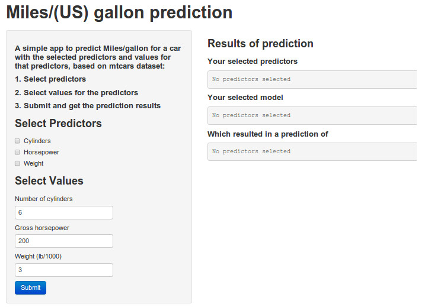

The app is a simple app to predict Miles/gallon for a car with the selected predictors and values for that predictors, based on mtcars dataset:
- Select predictors
- Select values for the predictors'
- Submit and get the prediction results'
jass
The app is a simple app to predict Miles/gallon for a car with the selected predictors and values for that predictors, based on mtcars dataset:

If you select Cylinders and Horsepower in the checkbox, the model fitted will be
fit <- lm(mpg ~ cyl + hp, data = mtcars)
fit
##
## Call:
## lm(formula = mpg ~ cyl + hp, data = mtcars)
##
## Coefficients:
## (Intercept) cyl hp
## 36.9083 -2.2647 -0.0191
For example, with that model selected, and values
the prediction for miles per gallon will be:
pred <- predict(fit, data.frame(cyl = 8, hp = 250))
pred
## 1
## 14.01
The code for this app can be found here: